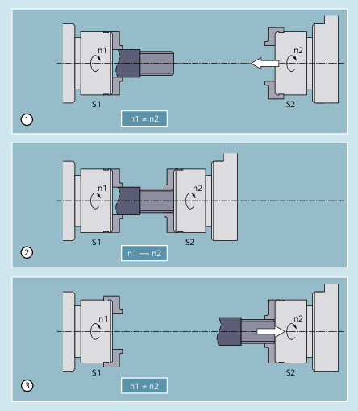
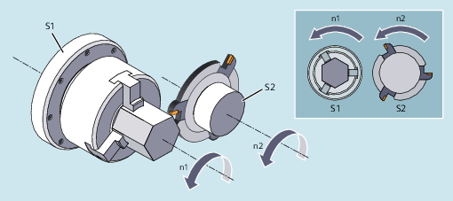

Die Synchronspindelkopplung ermöglicht ein drehzahlsynchrones Verfahren von Folgespindel (FS) und Leitspindel (LS) eines Synchronspindelpaares. Die Folgespindel folgt bei aktiver Kopplung (Synchronbetrieb) den Bewegungen der Leitspindel entsprechend des vorgegebenen Übersetzungsverhältnisses.
Der Synchronitätsmodus ist einstellbar. Folgende Varianten stehen zur Verfügung:
Drehzahlsynchronität (nFS = nLS)
Lagesynchronität (ϕFS = ϕLS)
Lagesynchronität mit Winkelversatz (ϕFS = ϕLS+ ∆ϕ)
Synchronspindelpaare lassen sich für jede Maschine sowohl mit Hilfe von kanalspezifischen Maschinendaten fest projektieren oder über das Teileprogramm anwendungsspezifisch definieren. Je NC-Kanal können bis zu 2 Synchronspindelpaare gleichzeitig betrieben werden.
Typische Anwendungsbereiche sind:
Fliegende Werkstückübergabe, z. B. zur Rückseitenbearbeitung (Übersetzungsverhältnis: 1:1)
① | Die Drehzahlen n1 von Spindel S1 und n2 von Spindel S2 sind unterschiedlich (n1 ≠ n2). Vor der Werkstückübergabe ist daher eine Synchronisierung erforderlich (Übersetzungsverhältnis: 1:1). |
② | Nach Synchronisierung der Spindeldrehzahlen (n1 == n2) wird das Werkstück übergeben. |
③ | Nach Werkstückübergabe kann die Bearbeitung der Rückseite erfolgen. |
Mehrkantbearbeitung (Polygondrehen), Drehzahlsynchronität (Übersetzungsverhältnis: n1:n2)

| Kopplung anwenderspezifisch definieren/ändern | |
| Kopplung einschalten Ausgehend von der aktuellen Drehzahl synchronisiert sich die Folgespindel auf die Leitspindel. | |
| Kopplung einschalten mit Übernahme der Spindelprogrammierung M3 S... oder M4 S... Eine Differenzdrehzahl der Folgespindel wird sofort übernommen. | |
| Kopplung ausschalten | |
| Kopplung ausschalten mit Stopp der Folgespindel | |
| Kopplungsparameter auf projektierte Werte zurücksetzen Es werden die in den Maschinen- und Settingdaten eingestellten Werte aktiviert. | |
| Anwenderdefinierte Kopplung löschen | |
| Warten Synchronlaufbedingung | |
| Bezeichner (Spindelnummer) der Folgespindel | |
| Bezeichner (Spindelnummer) der Leitspindel Hinweis: | |
| ||
| Zähler des Übersetzungsverhältnisses | |
| Nenner des Übersetzungsverhältnisses | |
Das Übersetzungsverhältnis ist das Drehzahlverhältnis zwischen Folge- und Leitspindel: nFS / nLS Die Programmierung erfolgt durch Angabe von Zähler und Nenner des Übersetzungsverhältnisses:
Die Angabe des Nenners ist optional. Ohne Angabe wird der Defaultwert 1.0 gesetzt. Beispiel: Folgespindel S2 und Leitspindel S1, Übersetzungsverhältnis = 1 / 1
Hinweis: | ||
| Satzwechselverhalten | |
| sofort (Voreinstellung) | |
| mit Erreichen von "Synchronlauf fein" | |
| mit Erreichen von "Synchronlauf grob" | |
| mit Erreichen von IPOSTOP, d. h., nach sollwertseitigem Synchronlauf | |
Das Satzwechselverhalten ist modal wirksam. Hinweis: | ||
| Kopplungsart: Kopplung zwischen FS und LS | |
| Sollwertkopplung (Voreinstellung) | |
| Istwertkopplung | |
| Geschwindigkeitskopplung | |
Die Kopplungsart ist modal wirksam. Hinweis: | ||
| Winkelversatz zwischen Leit- und Folgespindel bezogen auf die 0°-Position der Leitspindel in positiver Drehrichtung | |
Wertebereich: | 0°… 359,999° | |
Hinweis: | ||
| Programmcode | Kommentar |
|---|---|
| Leitspindel = Masterspindel = Spindel 1 | |
| Folgespindel = Spindel 2 | |
| N05 M3 S3000 M2=4 S2=500 | Leitspindel dreht mit 3000 U/min, Folgespindel dreht mit 500 U/min. |
| N10 COUPDEF(S2,S1,1,1,"NOC","Dv") | Definition der Kopplung (kann auch projektiert werden). |
| ... | |
| N70 SPCON | Leitspindel in Lageregelung nehmen (Sollwertk.). |
| N75 SPCON(2) | Folgespindel in Lageregelung nehmen. |
| N80 COUPON(S2,S1,45) | Fliegend auf Offsetposition = 45 Grad einkoppeln. |
| ... | |
| N200 FA[S2]=100 | Positioniergeschwindigkeit = 100 grd/min |
| N205 SPOS[2]=IC(-90) | 90 Grad überlagert in negative Richtung fahren. |
| N210 WAITC(S2,"Fine") | Warten auf Synchronlauf "fein". |
| N212 G1 X... Y... F... | Bearbeitung |
| ... | |
| N215 SPOS[2]=IC(180) | 180 Grad überlagert in positive Richtung fahren. |
| N220 G4 S50 | Verweilzeit = 50 Umdrehungen der Masterspindel |
| N225 FA[S2]=0 | Projektierte Geschw. (MD) aktivieren. |
| N230 SPOS[2]=IC(-7200) | 20 Umdrehungen. Mit projektierter Geschwindigkeit in negative Richtung fahren. |
| ... | |
| N350 COUPOF(S2,S1) | Fliegend auskoppeln, S=S2=3000 |
| N355 SPOSA[2]=0 | FS bei Null Grad stoppen. |
| N360 G0 X0 Y0 | |
| N365 WAITS(2) | Warten auf Spindel 2. |
| N370 M5 | FS stoppen. |
| N375 M30 |
| Programmcode | Kommentar |
|---|---|
| Leitspindel = Masterspindel = Spindel 1 | |
| Folgespindel = Spindel 2 | |
| N01 M3 S500 | Leitspindel dreht mit 500 U/min. |
| N02 M2=3 S2=300 | Folgespindel dreht mit 300 U/min. |
| ... | |
| N10 G4 F1 | Verweilzeit der Masterspindel. |
| N15 COUPDEF (S2,S1,-1) | Koppelfaktor mit Übersetzungsverhältnis -1:1 |
| N20 COUPON (S2,S1) | Kopplung aktivieren. Die Drehzahl der Folgespindel ergibt sich aus der Drehzahl der Leitspindel und dem Koppelfaktor. |
| ... | |
| N26 M2=3 S2=100 | Programmierung einer Differenzdrehzahl. |
1. Kopplung bei vorhergehender Programmierung der Folgespindel mit COUPON einschalten
| Programmcode | Kommentar |
|---|---|
| Leitspindel = Masterspindel = Spindel 1 | |
| Folgespindel = Spindel 2 | |
| N05 M3 S100 M2=3 S2=200 | Leitspindel dreht mit 100 U/min, Folgespindel mit 200 U/min. |
| N10 G4 F5 | Verweilzeit = 5 Sekunden der Masterspindel |
| N15 COUPDEF(S2,S1,1) | Übersetzungsverhältnis FS zu LS ist 1,0 (Voreinstellung). |
| N20 COUPON(S2,S1) | Fliegend auf Leitspindel einkoppeln. |
| N10 G4 F5 | Folgespindel dreht mit 100 U/min. |
2. Kopplung bei vorhergehender Programmierung der Folgespindel mit COUPONC einschalten
| Programmcode | Kommentar |
|---|---|
| Leitspindel = Masterspindel = Spindel 1 | |
| Folgespindel = Spindel 2 | |
| N05 M3 S100 M2=3 S2=200 | Leitspindel dreht mit 100 U/min, Folgespindel mit 200 U/min. |
| N10 G4 F5 | Verweilzeit = 5 Sekunden der Masterspindel |
| N15 COUPDEF(S2,S1,1) | Übersetzungsverhältnis FS zu LS ist 1,0 (Voreinstellung). |
| N20 COUPONC(S2,S1) | Fliegend auf Leitspindel einkoppeln und vorhergehende Drehzahl zu S2 übernehmen. |
| N10 G4 F5 | S2 dreht mit 100U/min + 200U/min = 300U/min |
3. Kopplung bei stehender Folgespindel mit COUPON einschalten
| Programmcode | Kommentar |
|---|---|
| Leitspindel = Masterspindel = Spindel 1 | |
| Folgespindel = Spindel 2 | |
| N05 SPOS=10 SPOS[2]=20 | Folgespindel S2 im Positionierbetrieb. |
| N15 COUPDEF(S2,S1,1) | Übersetzungsverhältnis FS zu LS ist 1,0 (Voreinstellung). |
| N20 COUPON(S2,S1) | Fliegend auf Leitspindel einkoppeln. |
| N10 G4 F1 | Kopplung wird geschlossen, S2 bleibt auf 20 Grad stehen. |
4. Kopplung bei stehender Folgespindel mit COUPONC einschalten
| Hinweis |
Folgespindel im Positionier- oder AchsbetriebBefindet sich die Folgespindel vor dem Einkoppeln im Positionier- oder Achsbetrieb, dann verhält sich die Folgespindel bei COUPON(<FS>,<LS>) und COUPONC(<FS>,<LS>) gleich. |
| Hinweis |
Leitspindel im AchsbetriebBefindet sich die Leitspindel vor der Definition der Kopplung im Achsbetrieb, wirkt auch nach dem Einschalten der Kopplung der Geschwindigkeitsgrenzwert aus Maschinendatum: MD32000 $MA_MAX_AX_VELO (maximale Achsgeschwindigkeit) Zur Vermeidung dieses Verhaltens muss die Achse vor der Definition der Kopplung in den Spindelbetrieb (M3 S... oder M4 S...) geschaltet werden. |